Префектура Киото · Сандзё и Каварамати · где остановиться
Два отеля Mitsui Garden в Киото: сады у улицы Сандзё и отель вместе с храмом
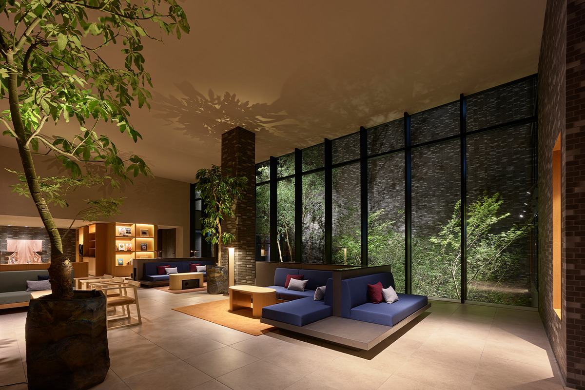
В центре Киото сеть Mitsui Garden Hotels держит два очень разных отеля. Один прячет за фасадом на улице Сандзё восемь садов и собственную сыроварню, другой вырос вместе со старым храмом, и его гости по утрам идут на службу в главный зал.
Отель
Сандзё: от шумной улицы в тихую глубину
Mitsui Garden Hotel Kyoto Sanjo Premier открылся 31 июля 2024 года на улице Сандзё. Сеть Mitsui Garden Hotels работает по всей Японии под девизом «Stay in the Garden»: пребывание в отеле должно напоминать время, проведённое в саду. Уже через два дня после открытия ресторан был полон, а кресла в глубине лобби занимали туристы.
Место отличное. Отель стоит напротив Музея культуры Киото, здания, которое считают главным украшением улицы Сандзё, и от него легко дойти до многих достопримечательностей города. Сама земля тоже с историей: здесь стояла «Тикирия», лавка кимоно, основанная в 1725 году.
Устройство отеля повторяет старый киотский дом матия. Со стороны улицы находится «омотэ», оживлённый фасад, а в глубине участка «оку», тихое пространство для отдыха. Между ними лежат внутренние дворики, всего их восемь. Сад перед лобби назвали «Годзан» и «Сэй», «Пять гор» и «Тишина», и он задуман как место, где можно перевести дух. Высокий потолок лобби в два этажа добавляет простора всему зданию.
У ресторана, ближе к входу с улицы, разбит сад «Сато», «Деревня», чтобы за едой смотреть на смену сезонов. На верхних этажах сады видны из коридоров. Их выложили камнями и белым гравием Сиракава, которые остались ещё со времён «Тикирии». Граница между садом и интерьером здесь нарочно размыта: японцы называют такой подход «тэйоку итинё», сад и дом как одно целое.
Номера
Цвета старинного кимоно
В отеле 185 номеров. Их оформление построено на «касанэ-но иромэ», сочетаниях цветов, которые веками подбирали для слоёв киотских кимоно и тканей. Шторы окрашены в «аониби», традиционный сизо-синий цвет, а обои в «умэнэдзуми», серый с розовым оттенком, как цветы сливы.
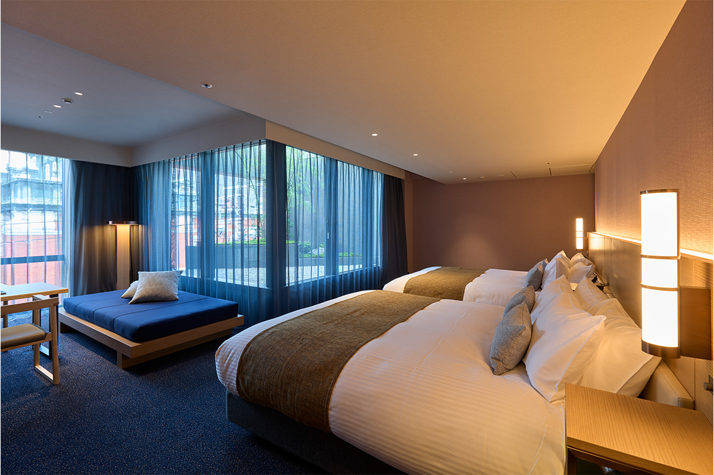
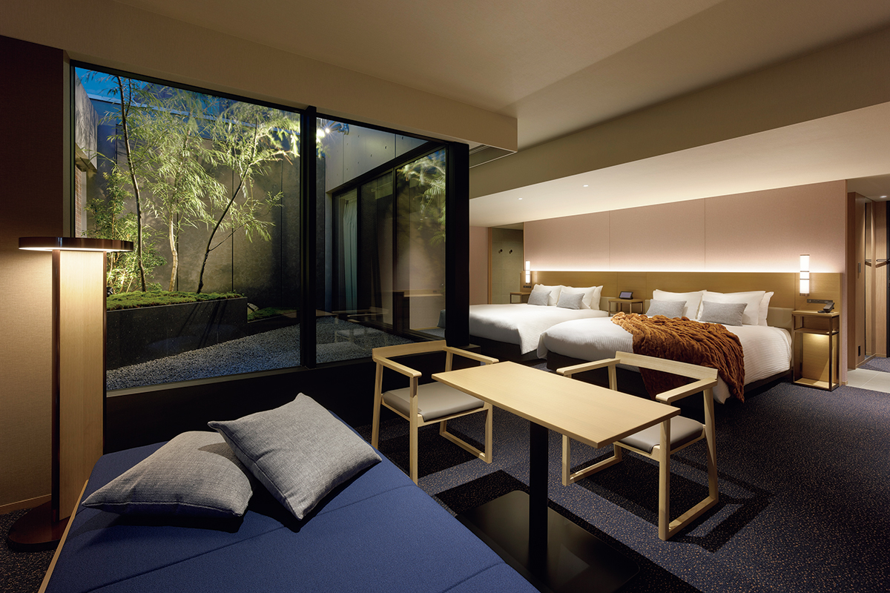
По всему отелю расставлены вещи киотских ремесленников, например шкатулки в технике сасимоно, столярной работы без гвоздей. Такие предметы есть во всех номерах. В лобби каждый месяц выставляют кимоно по сезону (так было в 2025 году).
Еда
Свежий сыр к завтраку
На улицу Сандзё выходит ресторан итальянской кухни curd с террасой, в него можно прийти и без проживания. Рядом работает сыроварня GOOD CHEESE LABORATORY. Здесь делают свежий сыр из молока, которое привозят из Тамбы, сельского края к западу от Киото. Девиз сыроварни: «Каждый день самый вкусный». В 2024 году в ней продавали шесть сортов, в первую очередь моцареллу, рикотту и буррату.
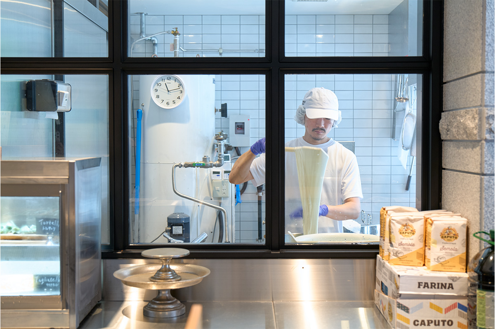
Сыр без консервантов и добавок подают каждое утро на завтраке. Кроме основного блюда к нему прилагается щедрый шведский стол с закусками: продукты из Киото, а рецепты вдохновлены кухнями Европы и Ближнего Востока.
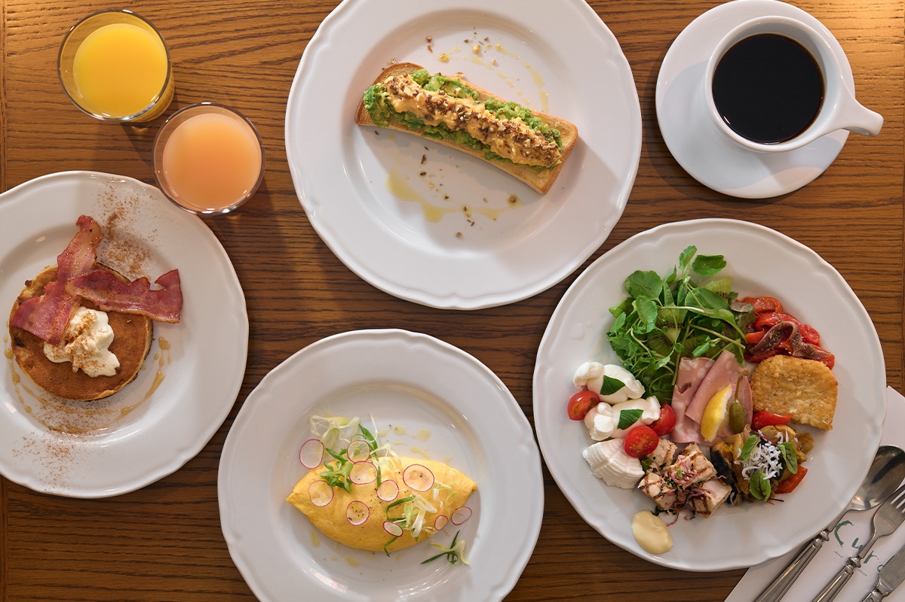
Бар
Y bar: сакэ, которого нет в магазинах
Если пройти от улицы узким переулком вдоль отеля до самого конца, упрёшься в Y bar. Это бар японского сакэ, и основу его карты составляют сорта «Такэно сюдзо», известной сакэварни из Кётанго на севере префектуры. Многих из них нет в обычной продаже по стране, а часть можно попробовать только здесь. Тема бара: традиция и новаторство. Гостей встречает бармен, который сам составляет напитки, и о баре говорят: про такое место хочется рассказать друзьям и одновременно не хочется.
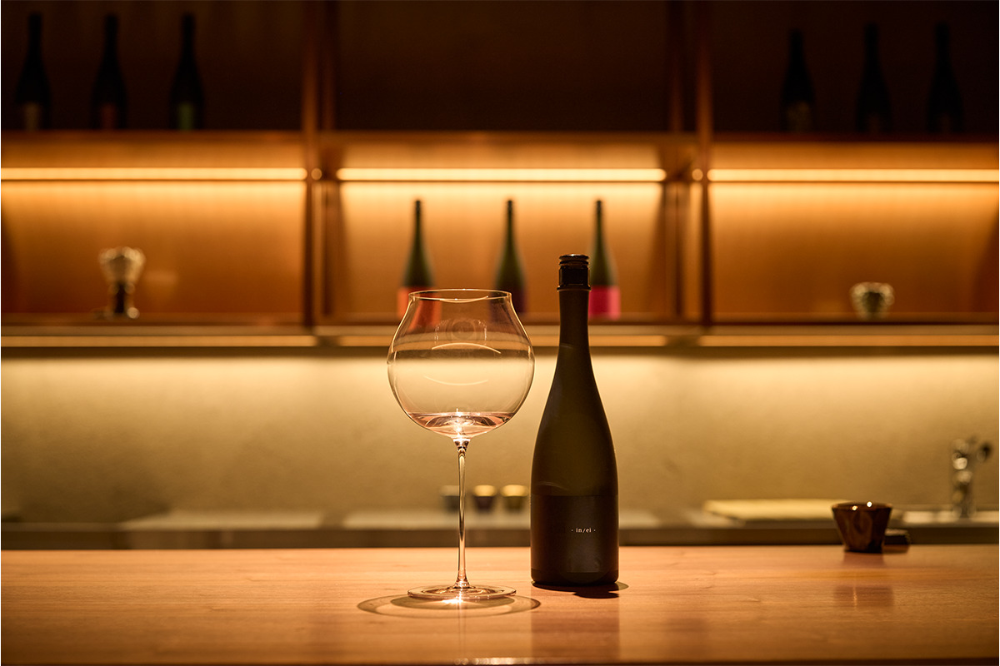
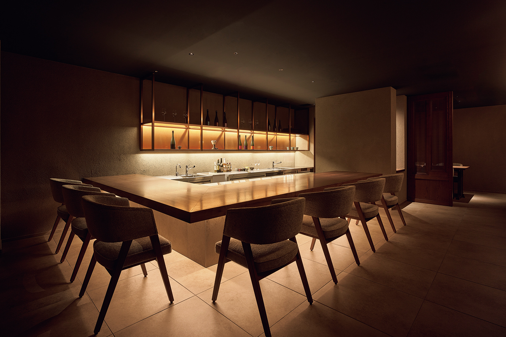
Баня
Подземный этаж для отдыха
На подземном этаже устроены отдельная баня, общая баня и фитнес-зал, все только для гостей отеля. Отдельная баня по предварительной записи появилась в сети Mitsui Garden Hotels впервые. В ней можно купаться в купальнике, а рядом есть комната отдыха, где за отдельную плату подают напитки и еду.
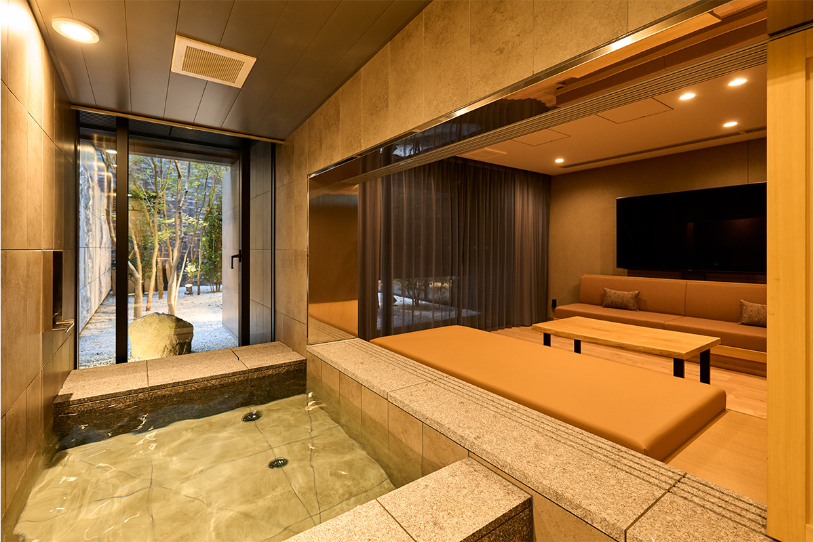
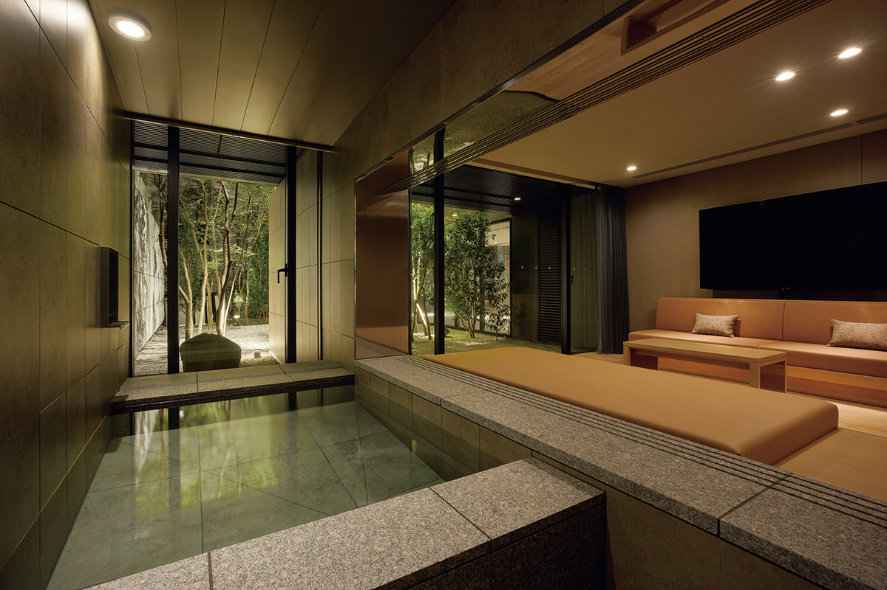
Общая баня площадью около 90 квадратных метров похожа на пещеру: каменные стены и приглушённый свет.
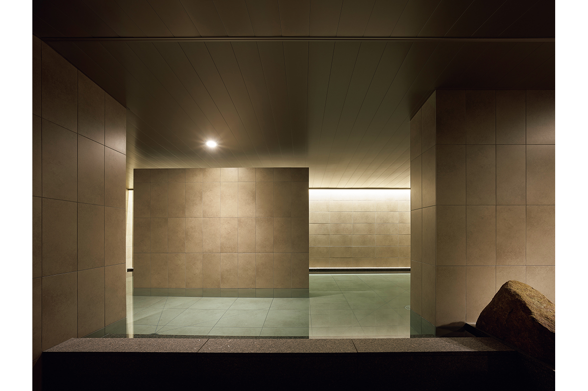
Mitsui Garden Hotel Kyoto Sanjo Premier
- Адрес
- префектура Киото, Киото, район Накагё, Хисия-тё, 45-1 (улица Сандзё, к востоку от Хигасинотоин)
- Телефон
- +81 75-231-3131
- Номера
- 185
- Цены / Вход
- 40 000 иен за ночь с завтраком, с налогом и сервисным сбором (2025)
- Заезд / выезд
- 15:00 / 12:00
- Как добраться
- около 3 минут пешком от станции Карасума-Оикэ городского метро, около 8 минут от станции Карасума линии Ханкю
Храм
Kawaramachi Jokyoji: отель, который спас храм
В Киото много храмов. К одним едут туристы, другие служат опорой для самих горожан. Но некоторым грозит исчезновение: здания ветшают, а преемника у настоятеля нет. Таким был и храм Дзёкё-дзи, которому больше 800 лет. Вместе с компанией Mitsui Fudosan он переродился в «храм-отель для следующих поколений»: Mitsui Garden Hotel Kyoto Kawaramachi Jokyoji.
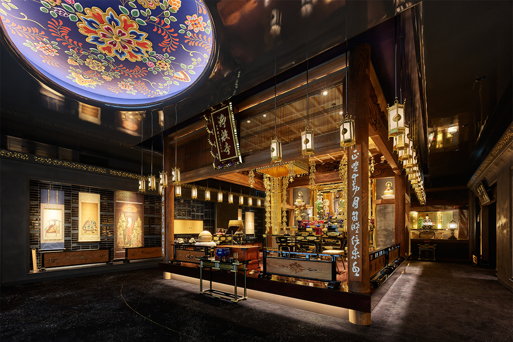
К отелю ведёт дорожка длиной около 40 метров от улицы Тэрамати. Её здесь воспринимают как дорогу к храму.
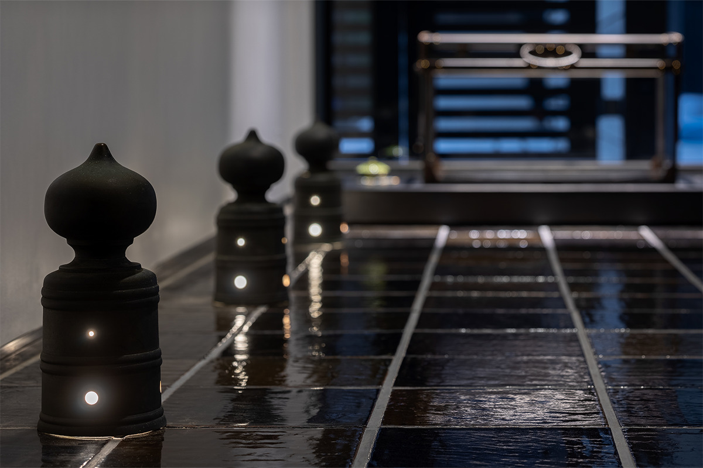
Интерьер
Пустота как главный экспонат
Фасад отделан в духе храмовой архитектуры, а интерьер задуман как «мир, в который не набивают лишнего»: главное здесь пустое пространство. Лучше всего это видно в лобби высотой около 7 метров, на два этажа. На белых стенах написаны кистью работы на тему «ку», буддийской пустоты. Их автор, мастер каллиграфии и абстрактной живописи тушью, задаёт тон всему отелю: строгий и торжественный, как в храме.
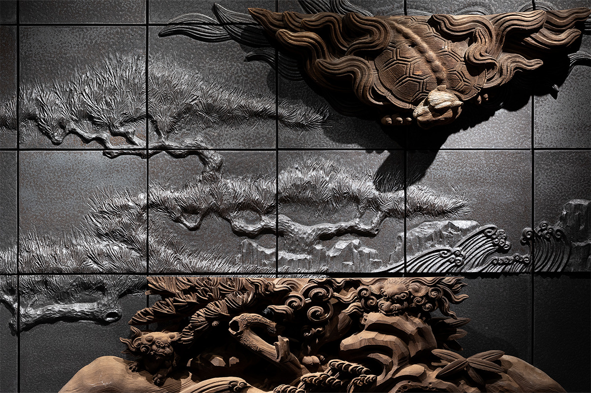
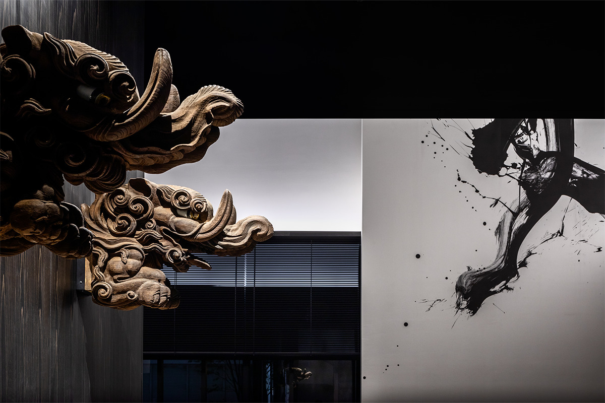
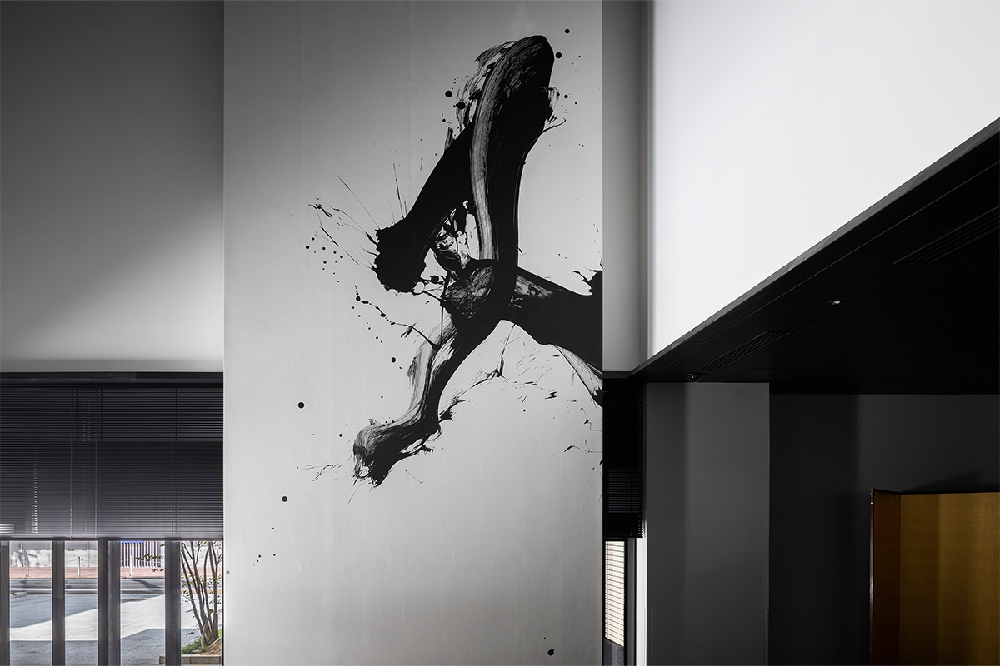
Брёвна старых храмовых построек стали колоннами, а украшения выставлены как произведения искусства. Отель похож на музей: вещи из собрания храма рассказывают его историю и передают дальше то, что храм хранил веками.
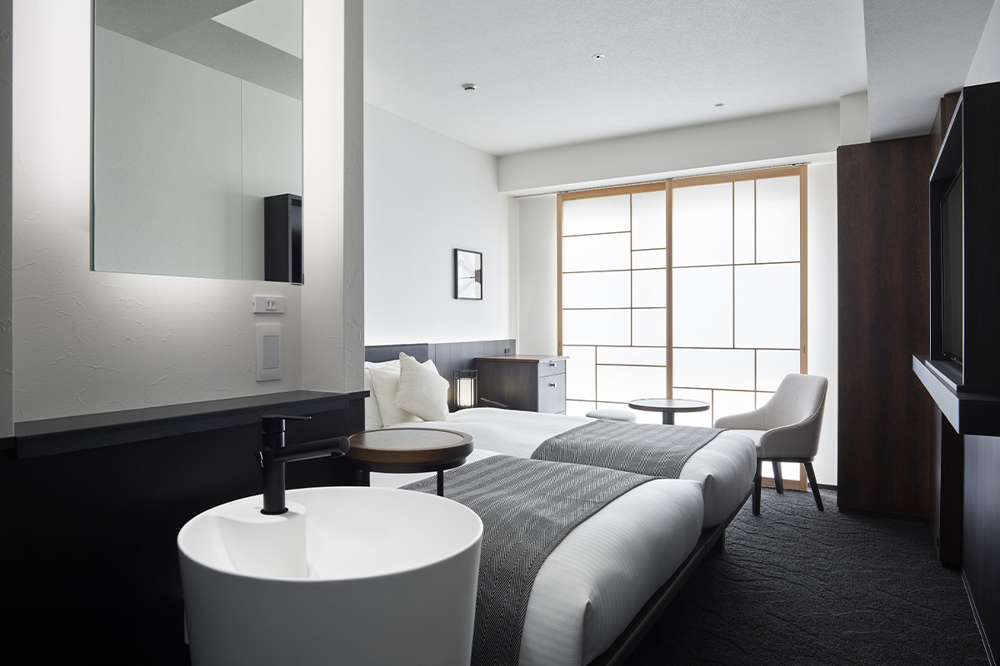
В отеле 167 номеров. И здесь храм чувствуется в деталях: фонарь, символ храма Дзёкё-дзи, подсказал форму светильников, а каменная чаша для омовения тёдзубати стала образцом для раковины.
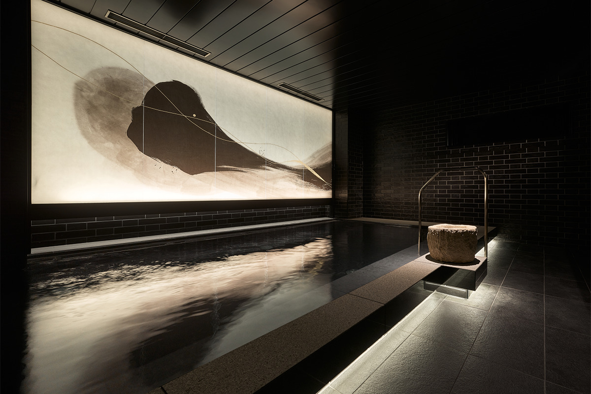
Утро
Служба в главном зале
Обычно храм закрыт для посетителей, но из маленького окна в углу лобби виден главный зал, и помолиться можно прямо оттуда. Возрождая храм, настоятель хотел, чтобы люди почувствовали храм близким и понимали, зачем его нужно сохранить. Поэтому гости отеля могут прийти на утреннюю службу в главном зале. Она проходит рано утром, платно и для ограниченного числа людей. Настоятель сам делает запись в книжке для храмовых печатей госюин.
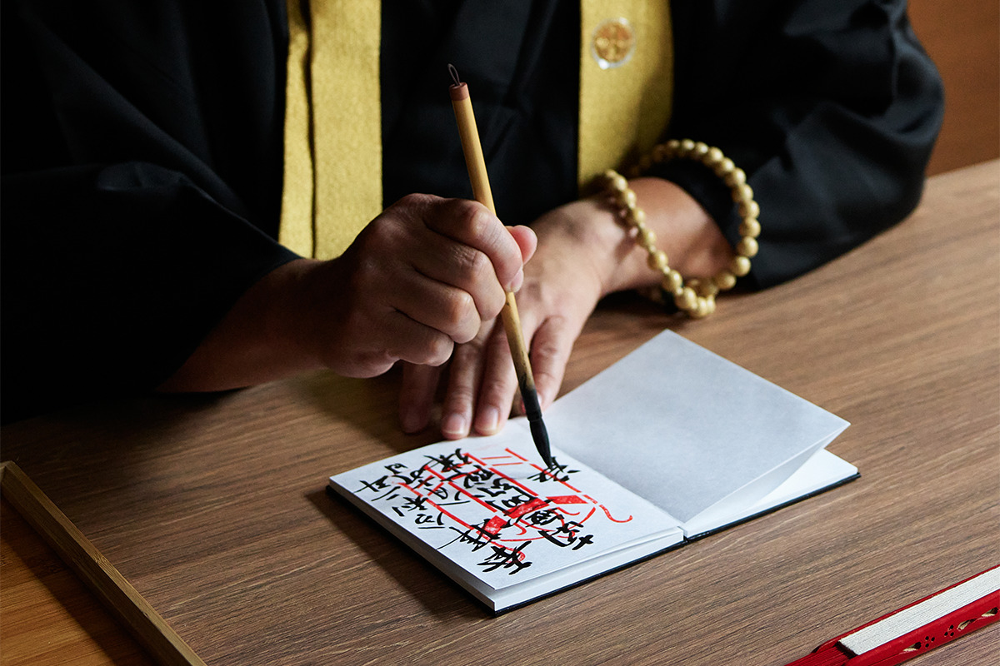
Завтрак подают не шведским столом, а на тарелке. Ресторан Sanga Ono Kyoto Jokyoji открылся как второе заведение «Санга Оно Иссюан», рёкана из Фукуоки, известного своей кухней. На выбор четыре основных блюда, в том числе «санга тираси», рис с примерно двадцатью сезонными овощами.
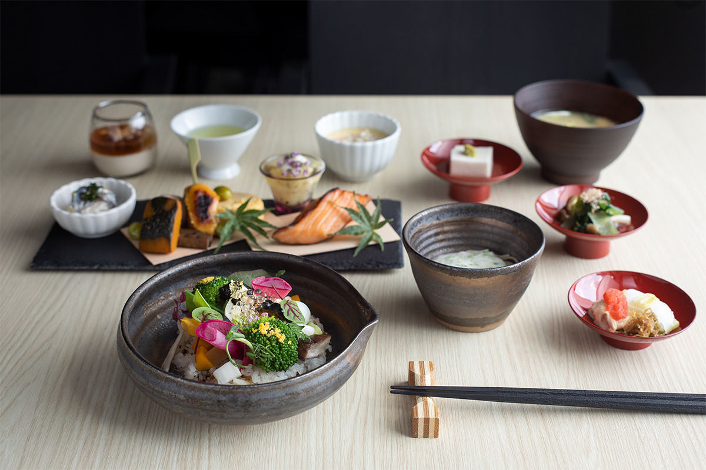
Киото веками жил вместе со своими храмами, и после ночи в храме-отеле хочется обойти и другие. Для этого есть платная доставка багажа между отелями Mitsui Garden в Киото и Mitsui Garden Hotel Kyoto Station (так было в 2022 году): вещи можно оставить до заселения или после выезда и гулять налегке.
Mitsui Garden Hotel Kyoto Kawaramachi Jokyoji
- Адрес
- префектура Киото, Киото, район Симогё, Тэйан-маэно-тё, 620 (улица Тэрамати, к югу от Сидзё)
- Телефон
- +81 75-354-1131
- Номера
- 167
- Цены / Вход
- от 10 100 иен за одного гостя в номере с завтраком, с налогом (2022)
- Заезд / выезд
- 15:00 / 11:00
- Как добраться
- около 5 минут пешком от станции Киото-Каварамати линии Ханкю, около 10 минут от станции Сидзё метро (1 минута от выхода 10 подземного перехода)
Фото: Марико Тая.